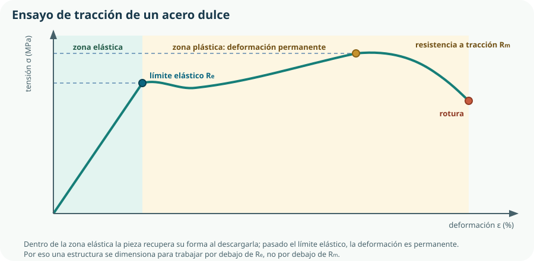

Hasta aquí el KR-1 ha sido un plan, un plano y un presupuesto. Este tema es el primero en el que hay materia: qué es exactamente eso con lo que vamos a fabricar. La trampa del bloque es creer que consiste en memorizar familias de materiales. No lo es: consiste en aprender a convertir un requisito en una propiedad medible y a defender una elección con números. Al final del tema deberías poder discutir con el taller, no solo aprobar un examen.
- distinguir propiedades físicas, químicas y mecánicas, y decir cuál responde a cada requisito;
- interpretar una curva de tracción e identificar el límite elástico y la resistencia a tracción;
- explicar la diferencia entre dureza, resistencia, tenacidad y fragilidad sin confundirlas;
- describir los ensayos de los que proceden los datos de un catálogo;
- situar un material en su familia —metálico, cerámico, polimérico, compuesto o híbrido— y prever su comportamiento;
- explicar qué aportan el grafeno, el estaneno y el shrilk, y qué hacen los tratamientos PVD y CVD;
- valorar un material por su ciclo completo: energía, contaminación, reciclabilidad y biodegradabilidad;
- seleccionar un material con una matriz de requisitos y propiedades, y justificar el descarte de las alternativas.
1. Lo que ocurre cuando se elige mal un material
En el Tema 1 el prototipo de la caja del KR-1 se deformó al sol. No fue mala suerte: fue una propiedad que nadie había mirado. El material era PLA, excelente para imprimir y con una temperatura de reblandecimiento de unos 60 °C, temperatura que una caja negra al sol de agosto alcanza sin dificultad. El fallo no estaba en la impresora ni en el diseño: estaba en la hoja de características que no se leyó.
Las tres familias de propiedades
Físicas
Cómo se comporta el material frente a la energía, el calor, la electricidad y el propio espacio: densidad, conductividad, dilatación, fusión.
Químicas
Cómo reacciona con su entorno: oxidación, corrosión, ataque por agua, disolventes o radiación solar.
Mecánicas
Cómo responde a las fuerzas: dureza, resistencia, elasticidad, plasticidad, tenacidad, fragilidad y fatiga.
2. Propiedades físicas
| Propiedad | Qué mide | Unidad | Requisito que resuelve en el KR-1 |
|---|---|---|---|
| Densidad | Masa por unidad de volumen. | kg/m³ o g/cm³ | Cuánto pesará el soporte y cuánto material consume la impresión. |
| Conductividad térmica | Facilidad con que el calor atraviesa el material. | W/(m·K) | Si la caja cerrada al sol se convierte en un horno para la electrónica. |
| Conductividad eléctrica | Facilidad con que circula la corriente. | S/m | Elegir conductor para el cableado y aislante para la carcasa. |
| Dilatación térmica | Cuánto cambia de tamaño al calentarse. | 1/K | Si la tapa deja de encajar entre la noche y el mediodía. |
| Temperatura de fusión o reblandecimiento | A qué temperatura pierde su forma. | °C | El fallo del primer prototipo: el PLA reblandece hacia los 60 °C. |
| Absorción de agua | Cuánta humedad admite en su masa. | % en masa | Si el material se hincha o pierde propiedades con el riego. |
| Comportamiento magnético | Si es atraído por un campo magnético. | — | Posibilidad de un cierre magnético en la tapa. |
3. Propiedades químicas
Las propiedades químicas describen lo que el entorno le hace al material con el tiempo. Son las que menos se miran en un prototipo —porque el prototipo dura dos semanas— y las que más fallos provocan en un producto, que dura años.
| Fenómeno | Qué ocurre | Dónde aparece en el KR-1 | Cómo se combate |
|---|---|---|---|
| Oxidación | El material reacciona con el oxígeno y forma una capa de óxido. | Tornillería y soporte metálico. | Acero inoxidable, aluminio anodizado, pintura o galvanizado. |
| Corrosión | Deterioro por reacción con el medio, acelerada por humedad y sales. | Contactos de la sonda enterrada: es la causa de que la sonda resistiva se destruya. | Sonda capacitiva, que no expone los electrodos al agua. |
| Par galvánico | Dos metales distintos en contacto y con humedad: el menos noble se corroe. | Un tornillo de acero en un soporte de aluminio. | Usar el mismo metal o aislar el contacto con una arandela. |
| Degradación por radiación ultravioleta | El sol rompe las cadenas del polímero: amarillea, se vuelve quebradizo y se agrieta. | La caja, expuesta todo el verano. | Polímeros con aditivo anti-UV, pigmentación o ubicación a la sombra. |
| Ataque por agentes químicos | Disolventes, fertilizantes o productos de limpieza disuelven o hinchan el material. | Fertilizante disuelto en el agua de riego. | Comprobar la compatibilidad química en la hoja del fabricante. |
4. Propiedades mecánicas
Son las que el currículo pide expresamente y las que más se confunden entre sí, porque en el lenguaje corriente «duro», «fuerte» y «resistente» significan casi lo mismo. En ingeniería son propiedades distintas, se miden con ensayos distintos y un material puede tener una altísima y otra pésima.
| Propiedad | Definición | Ejemplo claro |
|---|---|---|
| Dureza | Resistencia a ser penetrado o rayado en la superficie. | El vidrio es muy duro: no se raya con una llave. |
| Resistencia mecánica | Tensión máxima que soporta antes de romper. | Un cable de acero sostiene toneladas. |
| Elasticidad | Capacidad de recuperar la forma al retirar la carga. | Un muelle vuelve a su longitud. |
| Plasticidad | Capacidad de deformarse permanentemente sin romper. | El plomo o la arcilla conservan la forma que les das. |
| Tenacidad | Energía que absorbe antes de romper: aguanta el golpe. | Un casco de policarbonato se abolla pero no estalla. |
| Fragilidad | Lo contrario de la tenacidad: rompe de golpe sin avisar. | El vidrio, durísimo y frágil a la vez. |
| Fatiga | Rotura tras muchos ciclos de carga muy inferiores a la de rotura. | Un clip se parte a la vigésima vez que lo doblas. |
5. Ensayos: de dónde salen los números del catálogo
Una propiedad mecánica no es una opinión: es el resultado de un ensayo normalizado. Saber de qué ensayo procede cada cifra es lo que permite compararlas, y explica por qué dos catálogos pueden dar valores distintos del «mismo» material.
El ensayo de tracción
Es el ensayo fundamental. Se toma una probeta de forma y medidas normalizadas, se estira a velocidad controlada y se registra la fuerza aplicada frente al alargamiento. Dividiendo la fuerza por la sección inicial se obtiene la tensión, y el alargamiento relativo da la deformación. El resultado es esta curva, de la que sale la mitad de los datos de cualquier hoja de material:
σ = F / S0 tensión, en N/mm² o MPa
ε = Δl / l0 deformación, adimensional o en %

Los otros ensayos
| Ensayo | En qué consiste | Propiedad que da |
|---|---|---|
| Tracción | Estirar una probeta hasta la rotura. | Límite elástico, resistencia a tracción, alargamiento y módulo de elasticidad. |
| Dureza (Brinell, Vickers, Rockwell) | Presionar un penetrador de forma conocida y medir la huella. | Dureza superficial, en la escala del método usado. |
| Resiliencia (Charpy) | Romper una probeta entallada con un péndulo y medir la energía absorbida. | Tenacidad frente a impacto, en julios. |
| Fatiga | Aplicar miles o millones de ciclos de carga alterna. | Límite de fatiga y vida útil en número de ciclos. |
| Flexión | Apoyar la probeta y cargarla en el centro. | Resistencia y rigidez a flexión; habitual en polímeros y cerámicos. |
| Compresión | Aplastar la probeta. | Resistencia a compresión; decisiva en hormigón y cerámicos. |
6. Las familias de materiales técnicos
El currículo enumera los materiales técnicos «metálicos, cerámicos, moleculares, poliméricos e híbridos, entre otros». Lo útil de la clasificación no es la lista: es que cada familia tiene un patrón de comportamiento previsible, de modo que al saber a qué familia pertenece un material ya sabes bastante antes de mirar ninguna cifra.
| Familia | Ejemplos | Fuerte en | Débil en |
|---|---|---|---|
| Metálicos | Aceros, aluminio, cobre, latón, titanio. | Resistencia, tenacidad, rigidez, conductividad; se mecanizan y se sueldan. | Densidad alta, corrosión, coste energético de obtención. |
| Cerámicos | Alúmina, vidrio, porcelana, carburo de silicio. | Dureza, resistencia a temperatura y a agentes químicos; aislantes. | Fragilidad extrema; no admiten deformación plástica. |
| Poliméricos | PLA, PETG, ABS, nailon, polipropileno, siliconas. | Ligereza, moldeabilidad, coste, aislamiento, resistencia al agua. | Rigidez y resistencia bajas; sensibles a temperatura y a radiación UV. |
| Compuestos | Fibra de vidrio o de carbono con resina, hormigón armado. | Relación resistencia-peso excepcional y propiedades a medida. | Coste, dificultad de reparación y de reciclaje. |
| Híbridos | Paneles sándwich, materiales celulares, recubiertos. | Combinan lo mejor de dos familias en zonas distintas de la pieza. | Uniones entre materiales distintos: son el punto débil. |
| Moleculares y biomateriales | Bioplásticos de almidón o de quitosano, madera, celulosa. | Origen renovable y biodegradabilidad. | Sensibles a humedad y temperatura; prestaciones mecánicas modestas. |
Los polímeros de impresión que de verdad vas a usar
| Material | Reblandece hacia | Tenacidad | Resistencia al sol | Facilidad de impresión |
|---|---|---|---|---|
| PLA | 60 °C | Baja: rompe en seco | Mala: amarillea y se agrieta | Excelente |
| PETG | 80 °C | Buena | Aceptable | Buena |
| ABS | 100 °C | Buena | Regular | Difícil: se despega y huele |
| ASA | 100 °C | Buena | Muy buena: pensado para exterior | Difícil: requiere cámara cerrada |
7. Nuevos materiales y nuevos tratamientos
El currículo nombra expresamente tres materiales nuevos y dos familias de tratamientos superficiales. No hay que dominarlos: hay que saber qué prometen, por qué son noticia y en qué punto está su aplicación real. Son, en el fondo, ejemplos de investigación en curso: lo que el Tema 1 llamaba I+D.
Una única capa de átomos de carbono en red hexagonal. Extraordinariamente resistente, muy buen conductor eléctrico y térmico, y transparente. Su aislamiento mereció el Nobel de Física de 2010.[2] El problema no es su comportamiento, sino producirlo en cantidad y con calidad constante: por eso aparece en sensores, baterías y recubrimientos antes que en piezas estructurales.
El equivalente del grafeno con estaño: una capa monoatómica que, según la predicción teórica, conduciría la electricidad por sus bordes sin resistencia apreciable a temperatura ambiente. Su interés es electrónico, no mecánico, y está en fase de investigación de laboratorio.
Un bioplástico desarrollado en el Instituto Wyss de Harvard a partir de quitosano —procedente de cáscaras de crustáceo, un residuo— y fibroína de seda, imitando la estructura del exoesqueleto de un insecto. Es transparente, flexible, comparable en resistencia al aluminio a la mitad de peso, y se degrada en compost liberando nutrientes.[3]
Tratamientos superficiales: cambiar la piel sin cambiar la pieza
Muchas veces no se necesita otro material, sino otra superficie: que la pieza sea tenaz por dentro y durísima por fuera, o que no se corroa. Los tratamientos de deposición en fase de vapor consiguen exactamente eso, con capas de micrómetros o menos.
PVD · Physical Vapor Deposition
El material de recubrimiento se vaporiza físicamente —por evaporación o bombardeo— en vacío y se condensa sobre la pieza. Trabaja a temperatura relativamente baja. Es el recubrimiento dorado de nitruro de titanio de las brocas y fresas.
CVD · Chemical Vapor Deposition
Un gas reacciona químicamente sobre la superficie caliente y deposita ahí el material. Da capas más uniformes y adherentes, incluso en huecos, pero exige más temperatura. Es la vía industrial del grafeno y de los recubrimientos de herramientas de corte.
8. Criterios de sostenibilidad
El criterio 2.2 pide seleccionar materiales «atendiendo a criterios de sostenibilidad de manera responsable y ética». Eso no se resuelve eligiendo lo que suene más ecológico: exige mirar el ciclo de vida completo del material, desde que se extrae de la corteza terrestre hasta que se convierte en residuo. Es el otro ciclo de vida del que hablaba el Tema 2, el ambiental.
Minería o cultivo: consumo de agua y de energía, alteración del terreno, y disponibilidad real. Hay materias primas consideradas críticas por concentrarse en muy pocos países.
La fase que casi siempre domina la huella. Obtener aluminio primario exige del orden de diez veces más energía que obtenerlo reciclado; en el acero la diferencia también es grande, aunque menor.
Material desperdiciado, consumo de la máquina y residuos del proceso. La fabricación aditiva parte con ventaja: añade material en lugar de arrancarlo.
A veces decisiva: un material más ligero en algo que se mueve ahorra energía durante años de servicio. En una caja fija en el huerto, esta fase no cuenta.
Reutilización, reparación, reciclaje, compostaje o vertedero. Depende menos del material que del diseño: si la pieza no se puede desmontar, no se recicla.
| Criterio | Pregunta concreta | Dónde se comprueba |
|---|---|---|
| Energía incorporada | ¿Cuánta energía ha costado producir un kilo de este material? | Bases de datos de materiales y declaraciones ambientales de producto. |
| Huella de carbono | ¿Cuántos kilos de CO₂ equivalente por kilo de material? | Declaración ambiental del fabricante. |
| Reciclabilidad | ¿Existe una corriente real de reciclaje para este material, o solo es reciclable en teoría? | Códigos de identificación de plásticos y sistemas de gestión de residuos.[4] |
| Biodegradabilidad | ¿Se degrada, en qué condiciones y en cuánto tiempo? | Norma de compostabilidad; ojo: el PLA necesita compostaje industrial, no el del huerto. |
| Toxicidad | ¿Es seguro durante el uso, al mecanizarlo y al incinerarlo? | Ficha de datos de seguridad del material. |
| Durabilidad | ¿Cuántos años cumple su función antes de sustituirse? | La mejor decisión ambiental suele ser la que hace falta reponer menos veces. |
| Disponibilidad | ¿Es una materia prima crítica o abundante? ¿De dónde viene? | Listas europeas de materias primas críticas. |
9. Seleccionar un material: el método
Con todo lo anterior, la selección deja de ser una intuición y se convierte en un procedimiento de cuatro pasos, el mismo que se sigue en cualquier oficina técnica.
Convertir cada requisito de uso en una propiedad con unidad y un valor umbral. «Aguanta el verano» → «mantiene su forma a 70 °C».
Descartar todo material que no alcance algún umbral. Es un filtro binario: no se puntúa, se elimina. Aquí cae el PLA.
Entre los supervivientes, puntuar y ponderar con la matriz de decisión del Tema 1: prestaciones, coste, fabricabilidad y sostenibilidad.
Verificar la elección con un ensayo propio, aunque sea sencillo: imprimir la pieza y dejarla al sol una semana dice más que tres catálogos.
| Criterio | Peso | PLA | PETG | ASA | Aluminio |
|---|---|---|---|---|---|
| Estabilidad a 70 °C | 0,25 | 1 | 4 | 5 | 5 |
| Tenacidad frente a golpes | 0,20 | 2 | 4 | 4 | 5 |
| Resistencia al sol | 0,20 | 1 | 3 | 5 | 5 |
| Fabricable en el centro | 0,20 | 5 | 4 | 1 | 1 |
| Coste y sostenibilidad | 0,15 | 4 | 4 | 3 | 2 |
| Total ponderado | 1,00 | 2,35 | 3,80 | 3,70 | 3,70 |
Obsérvese lo que ha ocurrido: el PLA ni siquiera debería haber llegado a la tabla, porque falla el umbral de temperatura en el paso 2. Se ha dejado a propósito para que se vea que una matriz de decisión no sustituye al filtro: puntuando, un material inaceptable puede compensar su suspenso con notas altas en lo accesorio y quedar en un puesto respetable. Primero se elimina, después se puntúa.
Comprueba lo que has aprendido
Este tema se demuestra defendiendo una elección de material con números, no recitando familias.
| Aspecto | Qué debes demostrar | Evidencias posibles |
|---|---|---|
| Traducir requisitos | Que conviertes cada condición de uso en una propiedad con unidad y umbral. | Tabla requisito → propiedad → valor umbral, con la fuente de cada dato. |
| Interpretar propiedades | Que distingues dureza, resistencia y tenacidad, y que lees una curva de tracción. | Identificación del límite elástico y de la resistencia a tracción en una curva dada, con el coeficiente de seguridad aplicado. |
| Sostenibilidad | Que valoras el ciclo completo y no te quedas en la etiqueta del envase. | Comparación de dos materiales por energía, reciclabilidad real y durabilidad; una trampa detectada y explicada. |
| Seleccionar y comprobar | Que filtras antes de puntuar y que has hecho un ensayo propio. | Materiales descartados con el umbral que incumplen, matriz ponderada de los supervivientes y resultado de un ensayo sencillo. |
Prueba de realidad: imprime la misma pieza en dos materiales, déjalas una semana al sol del patio y mídelas. El resultado de ese ensayo vale más, en tu memoria, que cualquier tabla copiada de un catálogo.
Glosario del tema
- Coeficiente de seguridad
- Factor por el que se divide el límite elástico para fijar la tensión de trabajo admisible de una pieza.
- Corrosión
- Deterioro de un material por reacción con su medio, acelerado por la humedad y las sales.
- CVD
- Chemical Vapor Deposition: recubrimiento formado por reacción química de un gas sobre la superficie caliente de la pieza.
- Deformación
- Alargamiento relativo de una probeta respecto a su longitud inicial.
- Densidad
- Masa por unidad de volumen de un material.
- Dureza
- Resistencia de la superficie de un material a ser penetrada o rayada.
- Elasticidad
- Capacidad de un material de recuperar su forma al retirar la carga.
- Energía incorporada
- Energía consumida para producir una unidad de masa de un material.
- Estaneno
- Capa monoatómica de estaño con propiedades electrónicas singulares, en fase de investigación.
- Fatiga
- Rotura de una pieza tras muchos ciclos de carga muy inferiores a su carga de rotura.
- Fragilidad
- Tendencia a romper de golpe, sin deformación previa apreciable.
- Grafeno
- Capa de un átomo de espesor de carbono en red hexagonal, de alta resistencia y conductividad.
- Límite elástico
- Tensión a partir de la cual la deformación del material deja de ser recuperable.
- Material compuesto
- Material formado por una matriz y un refuerzo que conservan su identidad y actúan conjuntamente.
- Material híbrido
- Solución que combina materiales distintos en zonas distintas de la pieza, o material y geometría.
- Módulo de elasticidad
- Pendiente del tramo recto de la curva de tracción; mide la rigidez del material.
- Par galvánico
- Corrosión acelerada del metal menos noble cuando dos metales distintos están en contacto con humedad.
- Plasticidad
- Capacidad de deformarse de forma permanente sin romper.
- PVD
- Physical Vapor Deposition: recubrimiento formado al vaporizar físicamente un material en vacío y condensarlo sobre la pieza.
- Resiliencia
- Energía que absorbe un material antes de romper frente a un impacto.
- Resistencia a tracción
- Tensión máxima que soporta un material en el ensayo de tracción.
- Shrilk
- Bioplástico de quitosano y fibroína de seda que imita el exoesqueleto de los insectos y se degrada en compost.
- Tenacidad
- Capacidad de absorber energía y deformarse antes de romper.
- Tensión
- Fuerza por unidad de sección que soporta un material, medida en megapascales.
Resumen esencial
- Elegir un material es recorrer la cadena requisito de uso → propiedad medible → valor numérico → candidato; «resistente» sin más no es un requisito.
- Las propiedades físicas describen el comportamiento frente a calor, electricidad y espacio; las químicas, lo que el entorno hace al material con el tiempo; las mecánicas, la respuesta a las fuerzas.
- La densidad es del material y el peso de la pieza: se comparan piezas dimensionadas para el mismo requisito, no materiales.
- Dureza no es tenacidad: el vidrio es más duro que el aluminio y se rompe con un golpe que el aluminio absorbe.
- La mayoría de las piezas que fallan en servicio lo hacen por fatiga, con cargas muy inferiores a las de rotura.
- La curva de tracción da el límite elástico, la resistencia a tracción, el alargamiento y el módulo de elasticidad; se dimensiona por debajo del límite elástico, dividido por un coeficiente de seguridad.
- Cada cifra de un catálogo procede de un ensayo normalizado; sin norma común, los catálogos no serían comparables.
- Cada familia de materiales tiene un patrón previsible: los cerámicos son duros y frágiles, los polímeros ligeros y poco rígidos, los metales tenaces y densos.
- El grafeno, el estaneno y el shrilk se estudian como ejemplos de investigación en curso: lo que limita su uso no es su comportamiento, sino su producción.
- Los tratamientos PVD y CVD cambian la superficie sin cambiar la pieza: a menudo el problema está en la piel, no en el volumen.
- La sostenibilidad de un material se valora por su ciclo completo, y «biodegradable» y «reciclable» son afirmaciones que hay que comprobar.
- Se selecciona en cuatro pasos: traducir, filtrar por umbrales, ordenar con una matriz ponderada y comprobar con un ensayo propio. Primero se elimina y después se puntúa.
Fuentes y recursos fiables
- [1] UNE — Asociación Española de Normalización. Normas de ensayo de materiales: UNE-EN ISO 6892-1 (tracción de metales), UNE-EN ISO 148-1 (impacto Charpy) y UNE-EN ISO 6506-1 (dureza Brinell).
- [2] Premio Nobel de Física 2010 — Andre Geim y Konstantin Novoselov, por el grafeno (en inglés).
- [3] Wyss Institute, Universidad de Harvard — Bioplástico de quitosano (Shrilk) (en inglés).
- [4] Ecoembes. Corrientes reales de recogida y reciclaje de envases en España.
- [5] Centro Español de Metrología. Trazabilidad de las medidas de los ensayos.
- [6] Ministerio para la Transición Ecológica y el Reto Demográfico. Residuos, economía circular y declaraciones ambientales.
- [7] Decreto 64/2022, de 20 de julio (BOCM). Currículo de Tecnología e Ingeniería I, bloque B y criterio 2.2.